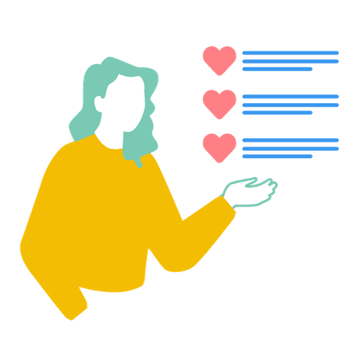

Mit der Academy erhaltet ihr im Business-Plan praxisnahe Lernmodule rund um Facilitation und wirksame Transformation.
Gemeinsam mit 9 Spaces zeigt Plan International Deutschland, wie wertebasiertes Arbeiten Orientierung gibt – nach innen wie nach außen.

Dieses Tool hilft dir herauszufinden, welche Werte dir wirklich wichtig sind.
Werte in Organisationen sind oft dafür da, gut zu klingen. Effektiv werden sie erst, wenn sie sich auf Verhalten auswirken. Wir zeigen, wie das gehen kann.
Dieses Tool hilft euch dabei, die Werte zu finden, die eure Zusammenarbeit am besten beschreiben.
Dieser Workshop hilft euch dabei, auf spielerische Art und Weise Perspektivenvielfalt bei wichtigen Entscheidungen sicherzustellen.